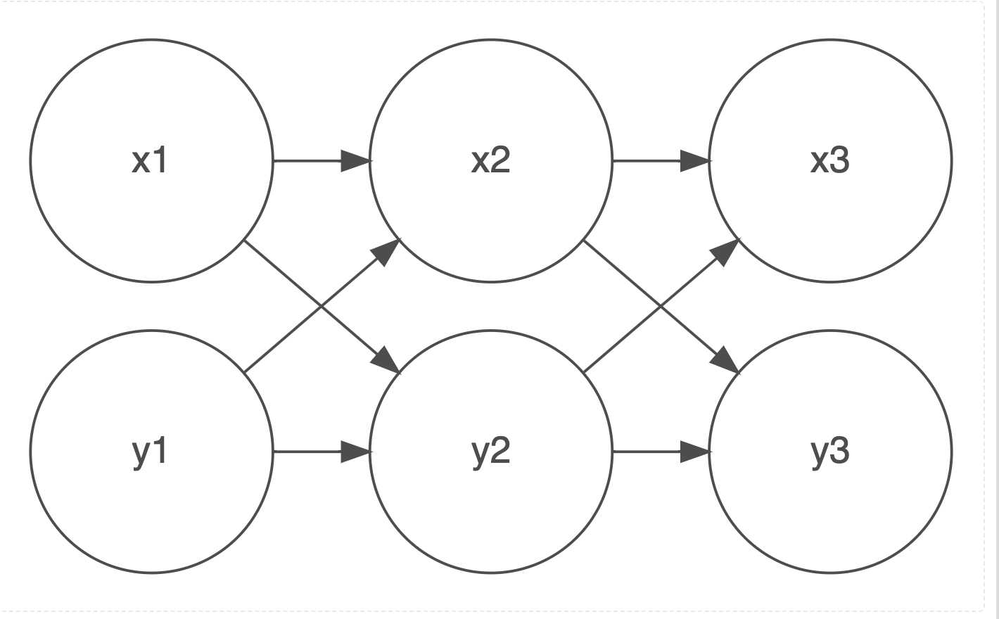

Why OLS Is A Bad Model For Longitudinal Data
And Why The Equations and Data Structure of MLM Are The Answer
2025-10-18
- Use the ⬅️ ➡️ keys to move through the presentation.
- Press o for panel overview.
- Press ☰ for menu.
Some Beginning Ideas
“Despite the incredible diversity existing among and within human cultures, there are many phenomena that occur regularly in all known societies. These commonalities, or universals, while deriving in part from human nature, may also have specific social, cultural, and systemic sources. We need to develop a working understanding of these universals so that we might advance legitimate, empirically based human science set on creating knowledge that is politically relevant to fostering real solutions to the problems that complicate human co-existence in the Age of the Anthropocene.” (Antweiler 2016)
“The language we have in that world is not large enough for the territory that we’ve already entered.” (Whyte and Tippett 2016)
An Empirical Example

Figure 1: Happiness as a Function of Time, Ice Cream and French Fries
Introduction
We are all familiar with the idea of:
\(y_i = \beta_0 + \beta_1 x + e_i\) (OLS)
Substantive Example
Let’s use the substantive example in Figure 1.
| id | x1 | x2 | x3 | y1 | y2 | y3 |
|---|---|---|---|---|---|---|
| 1 | ||||||
| 2 | ||||||
| 3 |
A First Longitudinal Model
We could imagine a longitudinal model where we regress \(y_i\) at time 2 on \(y_i\) at time 1….
\(y_{i2} = \beta_0 + \beta_1 x + \beta_2 y_{i1} + e_i\)
And we could even make this (perhaps confusingly) a multilevel model for individual \(i\) in social unit \(j\):
\(y_{i2j} = \beta_0 + \beta_1 x + \beta_2 y_{i1j} + u_{0j} + e_{ij}\)
… and add all of the usual random slope terms…
Thought Question
Any problems yet?
What About Change Scores?
\(y_{i2} - y_{i1} = \beta_0 + \beta_1 x + e_{i}\)
What Happens To The Regression Coefficients in a Change Score Model?
\(\beta y_{i1}\)
What If We Have More Than Two Time Points?
\(y_{i3} = \beta_0 + \beta_1 x + \beta_2 y_{i1} + \beta_3 y_{i2} + e_{i}\)
Multicollinearity
What is the problem here? We have 2 terms that are likely to be collinear:
\(\beta_2\) & \(\beta_3\)
This issue only becomes worse the more time points we add.
As a result, we are not really modeling \(y_2\) and \(y_1\).
Additionally …
No Explicit Function of Time
Additionally, we do not have an explicit function of time. We don’t know really have a clear idea of whether our outcome increases with time, or decreases with time. Or whether the effect is curvilinear e.g. \(t^2\) or \(\ln(t)\).
Unbalanced Data Are A Problem
Additionally, any data that is unbalanced i.e. study participants enter the study late, or leave the study early are going to be difficult for this kind of model to deal with.
Missing Data Are A Problem
Similarly, data that is missing at one time point, but present at other time points, is going to be a problem for this kind of model. (and it is going to be difficult for many of our colleagues to see how we can get around this issue.)
Our Answer To the Problem
We Reshape The Data and Use the SAME Notation!!!
“Mathematics is the art of giving the same name to different things.” (Poincare 1908)
Data in Long Format
| id | t | x | y |
|---|---|---|---|
| 1 | 1 | ||
| 1 | 2 | ||
| 1 | 3 | ||
| 2 | 1 | ||
| 2 | 2 | ||
| 2 | 3 | ||
| 3 | 1 | ||
| 3 | 2 | ||
| 3 | 3 |
Equation
So…. we take our standard multilevel notation.
Simple MLM
\[y_{ij} = \beta_0 + \beta_1 x + u_{0j} + e_{ij} \qquad(1)\]
cross out j write in t.
Longitudinal MLM
\[y_{it} = \beta_0 + \beta_1 t + u_{0i} + e_{it} \qquad(2)\]
Person-Observations
Every row is a person-observation (person i observed at time t). Every person has multiple rows.
This Has The Following Advantages
Key Intuition
The key intuition is that any statistical procedure–whether it is aware of the clustering of the data or not–operates on the data on a row by row basis.
First…
- Using the algebra in Equation 2, these models can easily accommodate both time varying and time invariant coefficients (Hox 2010; Hox, Moerbeek, and van de Schoot 2018; Singer and Willett 2003; Raudenbush and Bryk 2002; Rabe-Hesketh and Skrondal 2022).
- No multicollinearity issue. By inspection of Equation 2, we see that there is only a single \(\beta\) coefficient for each variable, \(\therefore\) no multicollinearity problem.
- Unbalanced data is less of a problem, the data structure and estimation are robust to these possibilities (Singer and Willett 2003; Raudenbush and Bryk 2002).
- Missing data is less of a problem (assuming MCAR). When a person observation is missing, that person simply has fewer rows of data (Hox 2010; Luke 2004; Raudenbush and Bryk 2002; Rabe-Hesketh and Skrondal 2022). But all rows of data are “matched” to the same person by \(i\).
How To Address Missing Data?
Addressing Missing Data is Complicated!!!
It is sometimes best to (a) do nothing; (b) do something complicated.
- Ignore it.
- Fill in the mean.
- Use previous observation.
- Use next observation.
- Linearly interpolate previous and next observation.
- Regression imputation.
- Multiple imputation.
Further…
- We now have an explicit function of time \(\beta_1 t\), and could treat time more flexibly, by creating a polynomial function of time e.g. by adding \(\beta_2 t^2\), etc. (Raudenbush and Bryk 2002; Singer and Willett 2003). (We could even substitute \(\beta \ln(t)\).)
- Again, by inspection of Equation 2, we see that multiple or many time-points are not a problem. Same algebra for 2 time points as for 10,000 time points. (Helpful when we start to think about intensive longitudinal data e.g. George Holden’s recording study).
- We are measuring exactly the time at which events take place for each individual (Singer and Willett 2003; Luke 2004). Not simply saying Wave 1, Wave 2, Wave 3, etc…
- Every individual could have a completely different set of time points and even a completely different number of time points (Hox 2010; Hox, Moerbeek, and van de Schoot 2018; Singer and Willett 2003; Luke 2004).
And we can even add \(\beta x\) back into the model.
Appropriate Metric For Time
Caution
We do need to think carefully about what is the appropriate variable for time. Is it the variable we used to reshape the data–often wave–or some other more appropriate metric, like age or time in study (Singer and Willett 2003)?
Visually
Figure 2: A Multilevel Model For Longitudinal Data
Lastly
Caution
Generating appropriate descriptive statistics can be a question.
Let’s continue to explore how this model works.
Appendix: Two Conceptual Diagrams
OLS or MLM for 2 Timepoints

An OLS Or Multilevel Model For 2 Timepoints
Cross-Lagged Model
A Cross Lagged Model For 3 Timepoints